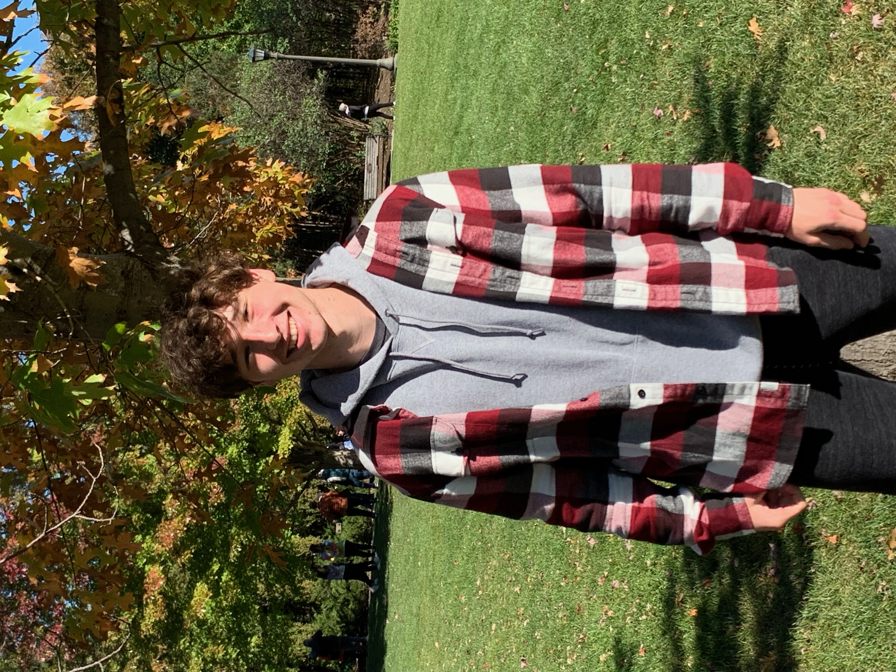

About Riley Hanson

I’m an aspiring Industrial Engineer and lifelong learner. When I’m not solving engineering problems, I enjoy staying active, spending time outdoors, and challenging myself with physical and mental goals. I believe in the power of hard work, and I’m driven by a mix of curiosity, competition, and creativity.
Personal Interest List
- Exercising and Fitness
- Weightlifting: I love lifting weights daily and constantly pushing myself.
- Cardio Training: I enjoy running and other cardio, especially outdoors.
- Plyometrics: Jump training helps me stay explosive and agile.
- Sports and Competition
- Grew Up Playing Sports: I grew up playing hockey, soccer and lacrosse, competition has always been a part of my life.
- Fan of All Sports: I follow Olympic events, team sports, and strength athletics closely.
- Enjoy Competing: Whether it’s in a gym or in a classroom, I love pushing myself and competing.
- Exploring the Outdoors
- Hiking & Biking: I enjoy exploring local trails and staying connected with nature.
- Camping & Nature: I love the outdoors and being outside.
- Outdoor Challenges: I’m always down for a hike, climb, or endurance test.